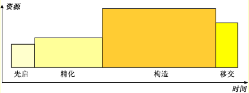
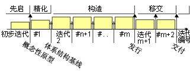
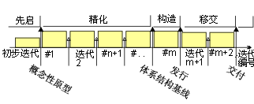
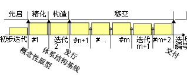
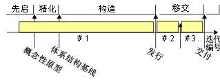

| RUP 生命周期 |
|
|
项目的阶段和里程碑 从管理角度，Rational Unified Process（RUP）的软件生命周期按时间分成四个顺序阶段，每个阶段以一个主要里程碑结束；每个阶段必须跨越两个主要里程碑之间的时间段。在每个阶段结束时执行一个评估，确定是否符合该阶段的目标。如果评估令人满意，则允许项目进入下一个阶段。 计划阶段所有阶段在进度安排和工作量方面是不相同的。虽然这根据项目不同而有相当大的变化，但一个中等规模的项目的典型初始开发周期应预见到在工作量和进度安排之间的以下分发： 可以用图形方式描述如下：  该分发可以有多种。例如，生成代码和测试用例的工具可缩短构造阶段。另外，对于演进周期而言，先启和精化阶段相当短，因为基本远景和体系结构已经建立。 规划策略在此部分中，我们将介绍与常用项目概要文件相对应的多个生命周期模式。 生命周期模式：递增“递增式策略确定用户需要并定义系统需求，然后以一系列工作版本执行剩余开发。第一个工作版本合并计划的功能的各部分，下一个工作版本添加更多功能等，直到系统变成完整的。”[DOD94] 以下迭代是典型的：
 此策略在以下情况下适用：
生命周期模式：演进方式“演进方式策略在以下方面不同于递增方式：没有完全理解用户需要，并且不能预先定义所有需求，而在每个后续工作版本中优化需求。”[DOD94] 以下迭代是典型的：
 此策略在以下情况下适用：
生命周期模式：递增交付一些作者也已对客户逐步采用了交付递增功能［GIL88]。当在产品面市时间上存在很大压力时，这可能是必需的，尽早交付某些关键功能可产生重大业务利益。 按照分阶段迭代的方法，移交阶段在早期开始并具有大多数迭代。此策略需要非常稳定的体系结构，对于“崭新的”系统，在初始开发周期中这是很难实现的。 以下迭代是典型的：
 此策略在以下情况下适用：
生命周期模式：“重要设计”传统的瀑布式方法可看作已退化的情况，其中在构造阶段只有一个迭代。在［DOD94］中它被称为“重要设计”。实际上，在移交阶段中很难避免附加的迭代。 以下迭代是典型的：
 此策略在以下情况下适用：
生命周期模式：混合策略实际上，很少有项目严格遵循一个策略。您通常会最终使用混合策略，开始时的某个演进策略、构建时的某个递增策略和多个交付策略。分阶段迭代模型的好处在于它可使您适应混合方法，只需增加特定阶段中的迭代长度和个数：
|
© Copyright IBM Corp. 1987, 2006. All Rights Reserved. |